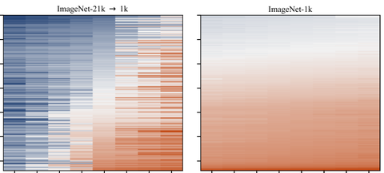
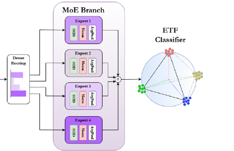

|
Gyumin Park 박규민
[Pronunciation: gyoo-min]
I am a research intern at the Center for Artificial Intelligence at the
Korea Institute of Science and Technology (KIST) in Seoul,
where I adapt vision foundation models to label traffic CCTV footage.
I received B.S. degrees in Nano and Electronic Physics and in Computer Engineering from
Kookmin University in 2026,
and did undergraduate research in the HCI Lab with Prof. Sangmin Yoon.
I came to machine learning from physics, and I still tend to understand a model through its dynamics.
I am applying to PhD programs for Fall 2027.
CV /
GitHub /
LinkedIn
Email: gyumin4726 [at] gmail [dot] com
|
Research
I want to build AI that keeps learning reliably under real-world constraints, and AI that understands how the physical world changes. My work follows these two directions.
Learning under real-world constraints.
Deployed models get few labels, a stream of new classes, and conditions their training never covered.
I work on few-shot and continual learning, where a pretrained model has to take in new knowledge without losing what it knows,
so the question is which parts should change and which should stay fixed.
At KIST, I adapt SAM3 to traffic CCTV footage.
Key work: SS-MoE
Physical understanding and world models.
I treat sequence models as dynamical systems.
In Mamba-based vision backbones, I read the decay timescales of the fixed-size state to see how long it keeps information.
Next, I want to bring this view to world models, which learn the dynamics of their environment and imagine what comes next.
Key work: SpanInit
|
News
| Aug 2026 | Graduated from Kookmin University with B.S. degrees in Nano and Electronic Physics and in Computer Engineering. |
| Jul 2026 | Joined the Center for Artificial Intelligence at KIST as a research intern. |
| Sep 2025 | Started a research internship at QSimPlus on quantum key distribution. |
| Summer 2025 | Top Prize in the UNITEF AI Application Proficiency Program, and selected for the Singapore Global Training Program. |
| Jan 2024 | Joined the HCI Lab at Kookmin University as an undergraduate researcher. |
|
|

|
Pretrained Mamba-based vision backbones can exhibit collapsed timescale banks: Checkpoint-aware state expansion with SpanInit
Gyumin Park, Sangmin Yoon
Under review, 2026
The relative decay timescales of a pretrained Mamba-based backbone can be read from its weights without data.
Across nine public checkpoints, some had nearly collapsed timescales while others spread over a factor of a thousand.
SpanInit initializes added states to fill the largest gaps those timescales leave.
|
|

|
Selective scanning with mixture-of-experts for few-shot class-incremental learning
Gyumin Park, Sangmin Yoon
In preparation for journal submission, 2026
code
SS-MoE freezes a VMamba backbone after the base session and keeps the classifier fixed, so only an expert module of four selective-scan experts and a router adapts to new classes.
On CUB-200, selective-scan experts beat MLP experts with more parameters in every session.
|
Safe human-in-the-loop driving with imperfect human intervention
R&Dix, inter-university student research club, 2025 / code
Extended a safe human-in-the-loop reinforcement learning framework for highway driving in the SMARTS simulator,
connected an LLM that suggests a driving action at each step, and tested how imperfect human interventions during training affect the agent.
|
Parameter optimization for quantum key distribution
QSimPlus, 2025 / code
Searched decoy-state QKD operating parameters with a genetic algorithm,
and trained an FT-Transformer that predicts the optimized parameters and the secret key rate from device conditions.
|
| Jul 2026 – present |
Research Intern, Center for Artificial Intelligence, KIST
Automatic labeling of traffic CCTV footage with foundation models
|
| Jan 2024 – Aug 2026 |
Undergraduate Researcher, HCI Lab, Kookmin University
Advisor: Prof. Sangmin Yoon
|
| Fall 2025 |
Research Intern, QSimPlus
Parameter optimization for quantum key distribution
|
| Mar 2020 – Aug 2026 |
Kookmin University, Seoul
B.S. in Nano and Electronic Physics; B.S. in Computer Engineering (second major: Software)
|
|